Homelab · Automations
Home Assistant as the hub
Home Assistant, open-source home automation software, is where devices that were never designed to work together get joined. Most of my 33 active automations take an input from one brand and act on another.
- Automations
- 33active
- Systems
- ~20joined into one
- Garage loop
- 4automations, one timer

Garage auto-close
My family kept forgetting to close the garage, and one night it was left open. So now, if the garage is left open, it closes itself. A ratgdo board, which puts the garage door opener on the local network, tells Home Assistant when the door opens. That starts one shared timer. Motion and occupancy sensors in the garage restart it, and the length of the restart depends on the time of day.
I did not reinvent the opener's safety. The opener's own obstruction beam already stops the door from closing on anything in its path, and that stays the opener's job. I work with it instead: ratgdo reports when the beam is broken, and I treat that as one more sign that someone is still in the garage, so it restarts the timer too.
- OpenThe door opens and a 15 minute timer starts
- ActivityMotion, occupancy or a broken beam restarts the timer: 3, 2 or 10 minutes by time of day
- CloseWhen the timer ends, Home Assistant closes the door
- TellPhones get a notification and the kitchen tablet chimes
- ShowA shared helper puts a red "Garage Open!" banner on the wall tablet dashboard
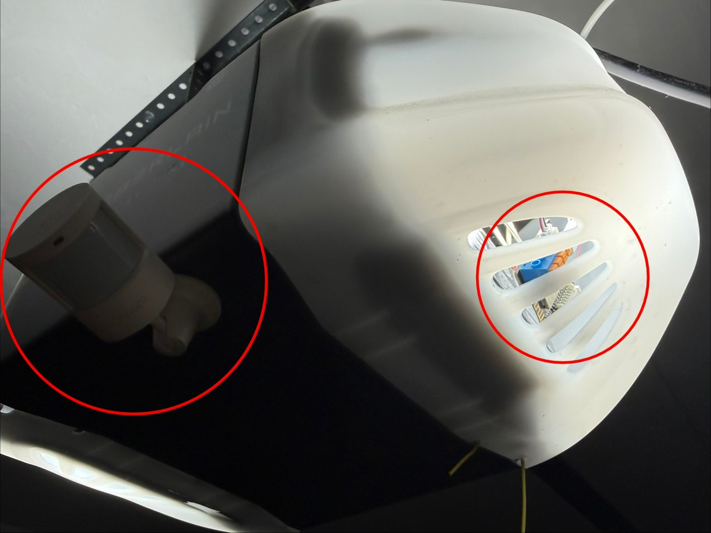
Inside one automation
The loop is four automations around one timer: start it when the door opens, close the door when it ends, cancel it when the door is closed by hand, and restart it when there is activity. This is the restart part. Device IDs are replaced with placeholders.
- alias: 'Garage Timer v2 p4: restart timer when motion detected'
description: ''
triggers:
- trigger: device
type: motion
device_id: <garage_door_device>
entity_id: <garage_motion_sensor>
domain: binary_sensor
- trigger: device
type: occupied
device_id: <garage_presence_device>
entity_id: <garage_occupancy_sensor>
domain: binary_sensor
- trigger: state
entity_id:
- binary_sensor.ratgdo_obstruction
to:
- 'on'
conditions:
- condition: device
device_id: <garage_door_device>
domain: cover
entity_id: <garage_door>
type: is_open
actions:
- action: timer.cancel
target:
entity_id: timer.garage_auto_close_timer
data: {}
- choose:
# Evening and overnight: 3 minutes
- conditions:
- condition: time
after: '<evening>'
before: '<late night>'
sequence:
- action: timer.start
target:
entity_id: timer.garage_auto_close_timer
data:
duration:
hours: 0
minutes: 3
seconds: 0
# Early morning: 2 minutes
- conditions:
- condition: time
after: '<late night>'
before: '<early morning>'
sequence:
- action: timer.start
target:
entity_id: timer.garage_auto_close_timer
data:
duration:
hours: 0
minutes: 2
seconds: 0
# Daytime: 10 minutes
- conditions:
- condition: time
after: '<early morning>'
before: '<night>'
sequence:
- action: timer.start
target:
entity_id: timer.garage_auto_close_timer
data:
duration:
hours: 0
minutes: 10
seconds: 0
mode: singleI used one shared timer instead of delays inside each automation, so all four automations can start, restart or cancel the same countdown. Activity in the garage cancels and restarts the timer with a length that fits the hour, and closing the door by hand cancels it.
The other automations
Each of these is small. Together they are why the house behaves like one system.
Person, light, camera
Three small automations form a chain across two vendors. The outside light exists partly to give the doorbell camera color video at night.
- DetectThe doorbell sees a person
- LightThe outside light turns on
- CameraThe light turning on switches the doorbell to color night mode
- ResetWhen the person leaves, the light goes off and the camera returns to auto
Wireless buttons across brands
Philips Hue remotes and an Aqara button talk to Home Assistant over Zigbee, a low-power wireless network for home devices. It runs locally, so the buttons keep working without the internet.
One Hue remote toggles a room light, toggles a smart plug, dims a Govee LED strip and recalls scenes on a long press. The dimmer has a floor at 1%, so a dim press never steps the strip to off. Three brands share four buttons. Two more remotes do the same job for the master bedroom lamp and the living room ceiling lights.
Not everything goes through an automation. The top button of the downstairs remote is linked directly to a Zigbee wall switch, device to device, so it works even if Home Assistant is down. Mains-powered Zigbee devices such as smart plugs also relay signals for the battery-powered ones, so adding a plug in the right place extends the network.
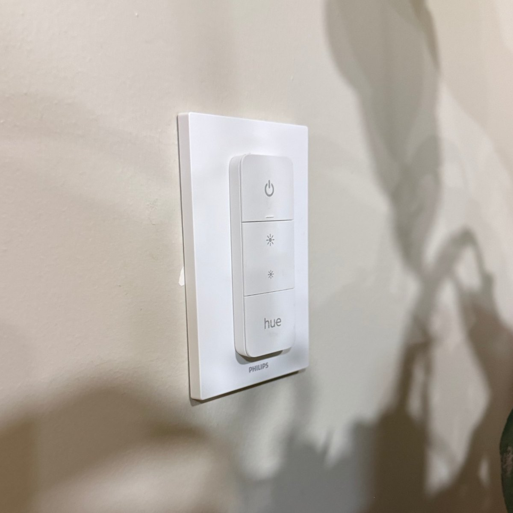
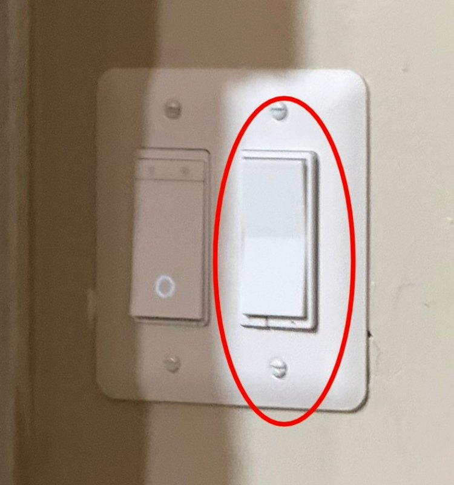
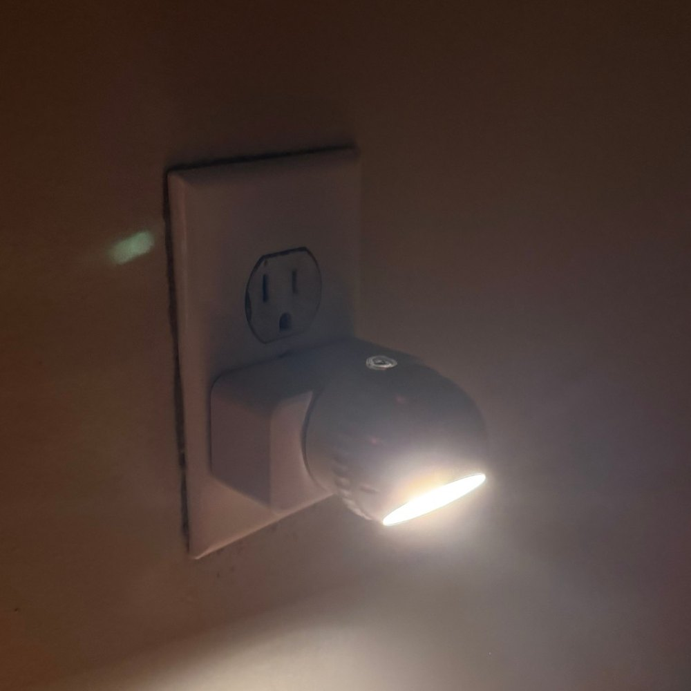
Evening out a cold basement
The basement, where family members sleep, was always cold. The living room warmed up as the sun came in, but the basement did not, and the heating often had no reason to run because the thermostat upstairs was satisfied.
I had temperature history for both floors in Home Assistant, so I used an AI model to help me analyze it. The data showed the pattern clearly: the gap between the two floors grew large at times when the heating system was not running at all.
The fix was to move air instead of making more heat. I worked with the AI model to draft an automation template that turns on the heating system's fan when the difference between the living room and the basement passes a set amount. Then I tuned it myself over time: lower thresholds, different behaviour at specific times of day, a millimeter-wave occupancy sensor in the basement as an input, and a lockout timer so the fan does not run constantly.
The template has two settings: a tighter threshold for comfort and a looser one for saving energy, each with its own lockout time.
I also built a dashboard for it, shown here, so I can watch the gap and switch the whole thing on or off. It is a deep-winter tool. I leave it off when the weather is mild, and the difference between the floors is still easy to see in the data.
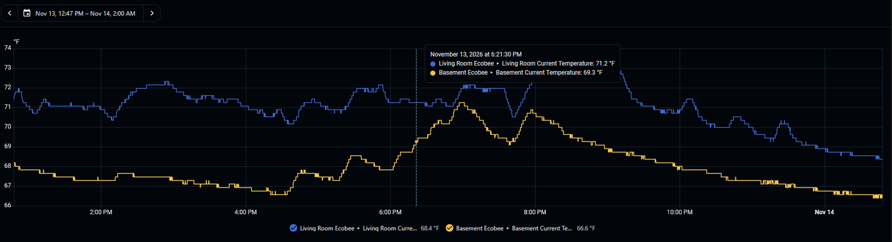
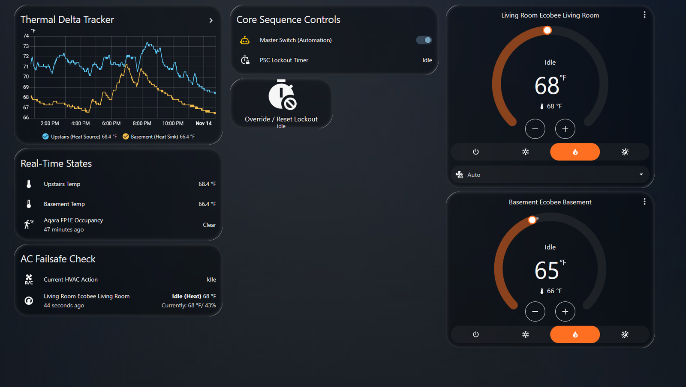
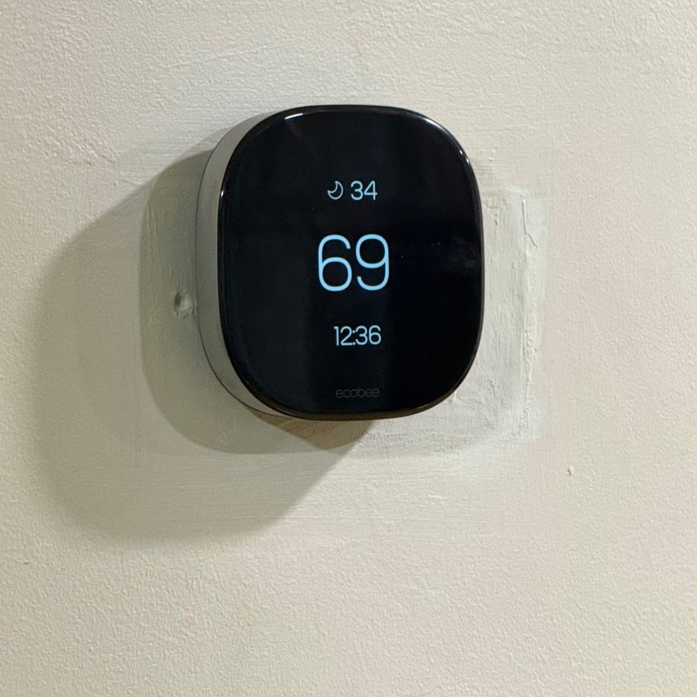
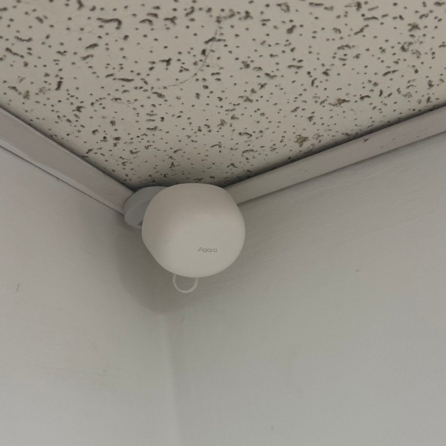
Keeping a room with a server in it cool
This one is a separate project. My server used to live in my bedroom, and the computers made the room hot. I fitted an AirBoost booster fan in the room's ceiling vent and tied it to what the heating system is doing.
The unit has motorized louvers, so it does more than stop blowing. When the furnace is heating, the fan stops and the louvers physically close, which blocks heated air from coming into a room that is already warm. When the system is only circulating air, the louvers open and the fan runs to pull in more of the cooler air. A hold timer keeps it running for a while after the system fan stops. It is also just a good fan.
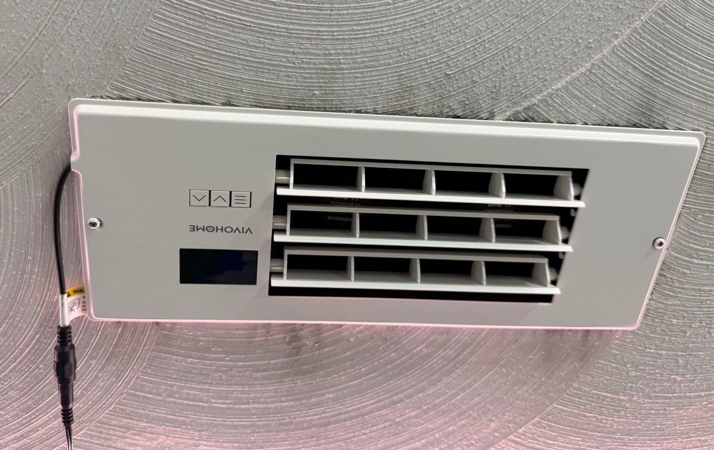
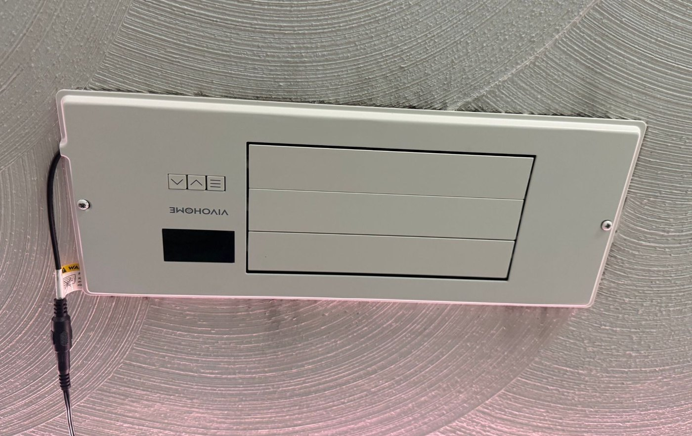
An infrared blaster for a heater with no network
A Shark tower fan heater in one bedroom has no network connection at all, only a small wireless remote. That remote only works from about two feet away. Past that it is basically useless, so in practice you had to walk over to the heater anyway.
I wired an infrared emitter to an ESP board, a small microcontroller, attached it to the heater and taught it the remote's signals. Home Assistant now has a button for every key on that remote: power, fan up and down, heat on and off, heat up and down, auto, rotate, timer and screen brightness. It works from anywhere, and it responds faster than the original remote does even when that remote is held right at the heater's sensor.
It also does something the remote never could: proper timers. An automation switches the heat at set times of day, chosen around the schedules and preferences of the people who use that room. It is a simple schedule built for people, not a data-driven one.
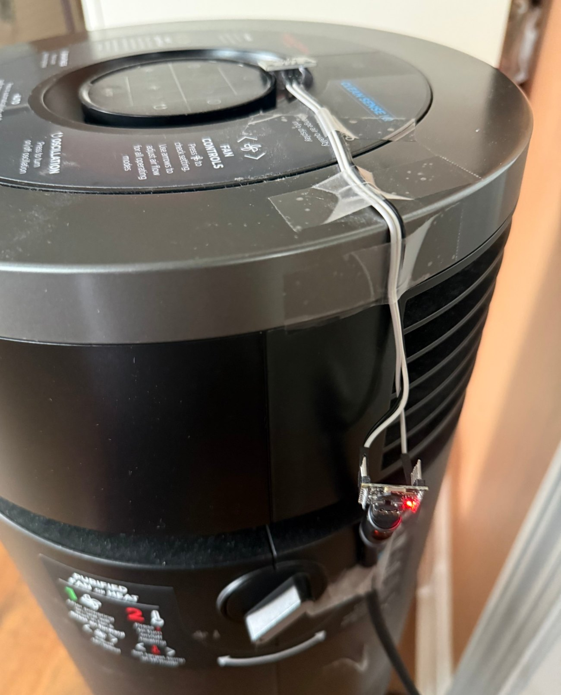
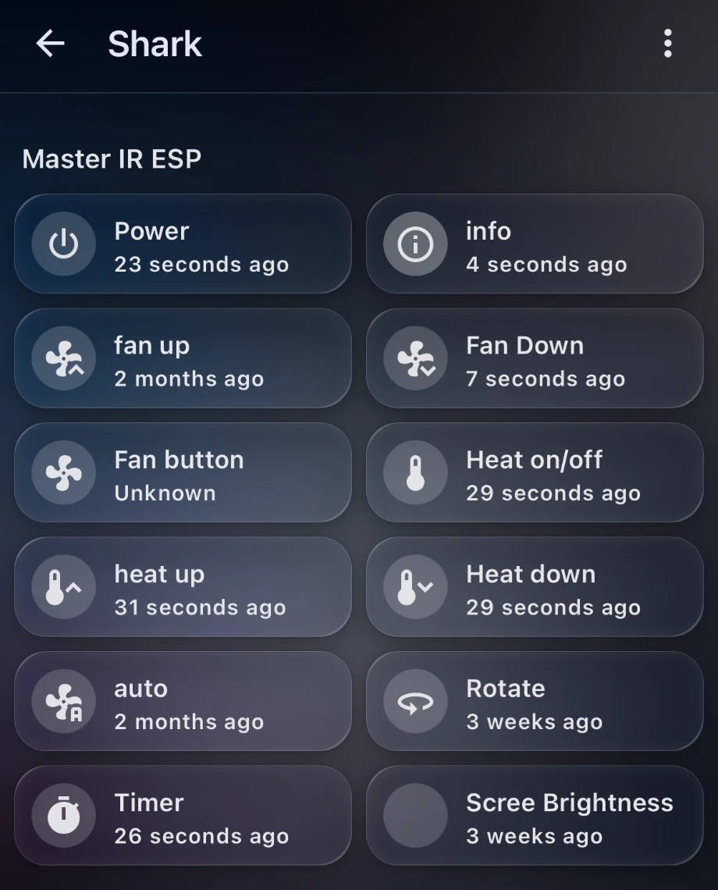
Outdoor lights and schedules that survive a restart
The outdoor string lights turn on at sunset and off late in the evening, and a fountain runs during the day. The string light rules also run whenever Home Assistant starts, so a restart or a power cut in the evening does not leave the lights in the wrong state. A floodlight that someone turns on switches itself off after ten minutes.
Lamps that repair themselves
When either WiZ bulb drops off the network, Home Assistant reloads their integration entries automatically. An hourly reload and a local webhook act as backups.